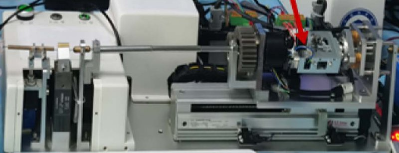

Academic bedside robots · siat_haptic_duan2025
SIAT haptic robot
SIAT third-generation isomorphic primary-secondary robotic catheter system with haptic-enabled primary (clamp-relay secondary manipulator, magnetic-powder-brake primary interface)

1 / 9


- Family
- Academic bedside robots (academic)
- Devices
- guidewire / catheter (one tool at a time; sizes N.R.): guidewire through a guiding catheter into the anterior descending branch (du2024 Sec. II-B); "flexible endovascular tools such as catheter and guidewire" (omisore2024 Sec. II)
- Degrees of freedom
- 4 on the secondary manipulator (clamping, delivery, rotation, orientation adjustment; duan2025 Sec. II-B); "a robotic 4-DoF mechanism", of which axial translation and axial rotation are used (omisore2024 Sec. II-A)
- Push
- Clamp relay
- Twist
- Other
- Tested up to
- Phantom
- Sim-to-real
- Partial (motor level) — A simulation-trained part ran on the robot at motor level only, not for navigation.
Testing
- Highest level
- Phantom
- What was tested
- Haptic force calibration, then robot-assisted catheterisation in a cardiovascular model; human-subject study approved by SIAT-IRB-220915-H0606 (participant count not extracted) du2024: 168 robot-assisted trials, 12 per subject, in a 1:1 adult vascular simulator with pulsatile blood-like fluid; path with one branch, two stenoses (37.45 %, 42.69 %) and a tortuous part; group A 10 subjects without and group B 5 with manual PCI experience (168 / 12 = 14, so Sec. II-B and II-E2 disagree on the count); same IRB approval SIAT-IRB-220915-H0606 (du2024 p. 1, Sec. II-B, II-E2). omisore2024: bench only, 1 mm displacement commands on the slave-side device, number of runs N.R. (Sec. IV-C, Fig. 7).
- Key numbers
- Stroke 150 mm; haptic enhancement and hysteresis compensation as the stated contributions; no headline error numbers extracted du2024: CNN recognition of operator-robot cooperation 99.99 % (test set); synergy ratios 89.66 %, 90.28 % and 91.12 % "based on the three aspects of delay consideration" for experienced operators; constant delay modelled as 0.254 s (Abstract, Sec. III). omisore2024: on the robot, displacement error within +/-2 x 10^-2 mm (Sec. IV-C, Fig. 7); in CoppeliaSim, DRL-PID error 0.003 +/- 0.0058 mm vs 0.012 +/- 0.009 (Ziegler-Nichols PID) and 0.015 +/- 0.011 mm (fuzzy PID), 10 trials of 100 set-points each (Sec. IV-B).
Mechanism
- Push (translation)
- clamp-relay
- Twist (rotation)
- Rotation module with self-aligning roller bearing and four balance springs (mechanism details N.R.) du2024 and omisore2024 defer the drive mechanism to earlier papers (du2024 Sec. II-D ref. [29]; omisore2024 Sec. II-A ref. [20]).
- Device range
- N.R.
- Target anatomy
- cardiovascular model with pulse pump (right coronary artery, stenoses)
Sensing and interface
- Force sensing
- Proximal vessel-tool interaction force: axial resistance pushes the tool against clamp A, which compresses a bearing plate on LFS-13-10N sensors (Ligent, Shenzhen) 2024 prototype (du2024 Sec. II-A, II-D3 to II-D5): proximal axial force sensor on the secondary's slider (SBT674-2kg, range 19.6 N) measures friction plus tool-tissue force; a 32-channel flexible pressure sensor on the primary control ring (0.01-19.6 N) measures the operator's finger force; distal tool-tissue force comes from a 6-axis F/T sensor (SBT308, 49 N per axis, composite error 1.0 %) under the phantom, not on the robot. omisore2024 Sec. II-A: "in-built sensing units for position and force feedback".
- Leader and haptics
- Primary interface with magnetic powder brake; dynamic hysteresis compensation model; human-perception-based haptic enhancement amplifying low-force changes and a safety strategy The 2024 primary uses the same motion sensors as the 2025 interface (magnetostrictive position sensor SDM20T-0150, rotary encoder E40H12-1000-3; du2024 Sec. II-D, duan2025 Sec. II-A); du2024 renders no force to the operator. omisore2024: master with a control knob and potentiometer, commands over TCP/IP with about 0.1 s delay (Sec. II-A, IV-C).
- Imaging
- N.R.
- Sterility
- N.R.
Size
- Footprint (mm)
- 570 x 220 x 160 (slave-side device; omisore2024 Sec. II-A: "57x22x16 cm"); secondary travel 150 mm per stroke (duan2025 Sec. II-B)
- Mass (kg)
- N.R.
Simulation
- Simulation model
- CoppeliaSim model of the slave-side robot: Solidworks CAD exported as URDF, prismatic and revolute joints for axial translation and rotation with parameterised static and dynamic variables and simulated position sensors; no vessel or device model (omisore2024_sample Sec. III-A, Fig. 3)
- Sim-trained controller
- partial (motor level, bench; not a navigation controller): a deep-RL agent that tunes PID gains for axial translation was trained in the CoppeliaSim model of the slave (converged in 20 episodes of 100 steps); "the final tuning parameters were exported and applied in the robotic system" (Raspberry Pi 4), which tracked 1 mm displacement commands from the master knob within +/-2 x 10^-2 mm; no device, phantom or baseline on the hardware, number of runs N.R. (omisore2024_sample Sec. III-A, III-D, IV-C, Fig. 7)
Versions
- Lineage
- third generation cited to 2022 (du2024 Sec. II-A ref. [25], Du et al., T-MRB 2022; not read) -> 2024 improved prototype that logs proximal and distal force, 168 trials by surgeons and novices in a coronary phantom (du2024_analyzing, full) -> 2024 4-DoF slave-side device in a white branded housing on an arm, PID gains tuned by deep RL in a CoppeliaSim model (omisore2024_sample, full) -> 2025 primary haptic interface with magnetic powder brake and a resistance-detection module on the clamp (duan2025_development, ToH 2025)
Sources
- Development of an Intuitive Interface With Haptic Enhancement for Robot-Assisted Endovascular Intervention · IEEE Transactions on Haptics, 2025 · doi:10.1109/toh.2023.3346479 [duan2025_development]
- Analyzing Surgeon–Robot Cooperative Performance in Robot-Assisted Intravascular Catheterization · IEEE Transactions on Human-Machine Systems, 2024 · doi:10.1109/thms.2024.3452975 [du2024_analyzing]
- A Novel Sample-Efficient Deep Reinforcement Learning with Episodic Policy Transfer for PID-Based Control in Robotic Catheter System · 2024 IEEE International Conference on Robotics and Biomimetics (ROBIO), 2024 · doi:10.1109/robio64047.2024.10907735 [omisore2024_sample]
- Towards Characterization and Adaptive Compensation of Backlash in a Novel Robotic Catheter System for Cardiovascular Interventions · IEEE Transactions on Biomedical Circuits and Systems, 2018 · doi:10.1109/tbcas.2018.2825359 [omisore2018_towards]
Notes
- Notes
- Shows the SIAT move from belt-driven graspers (2018) to clamp-relay plus a force-sensing clamp (2023-25). F4 2026-10-14: du2024 and omisore2024 are attached here because they come from the same SIAT group (Lei Wang, Omisore, Duan, Du, Akinyemi), carry the same IRB number as duan2025, use the same primary-interface sensors as duan2025, and call the system the third / current isomorphic primary-secondary generation. omisore2024 Figs. 1 and 6 show the slave in a closed branded housing; duan2025 Fig. 13(a) shows an open clamp-relay manipulator. That they are one mechanism is not stated.
This record
- Read level
- full — partial (duan2025 text); full (du2024_analyzing, omisore2024_sample; 2026-10-14)
- Picture
- duan2025_development Fig. 13(a) (whole system platform, secondary manipulator), ToH 2025, doi:10.1109/TOH.2023.3346479 ↗ — licence: publisher copyright; grade C
- Picture changes
- native extract (4092x1548 figure); cropped between label boxes; not upscaled; a red pointer arrow touching the clamp module is left in place (it crosses the mechanism)
- Found by
- academic: Search of academic bedside robots.
- Data
- JSON · YAML:
records/robots/siat_haptic_duan2025.yaml - Correction
- Suggest a correction [repository not created yet]